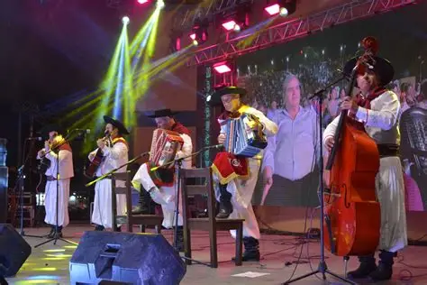
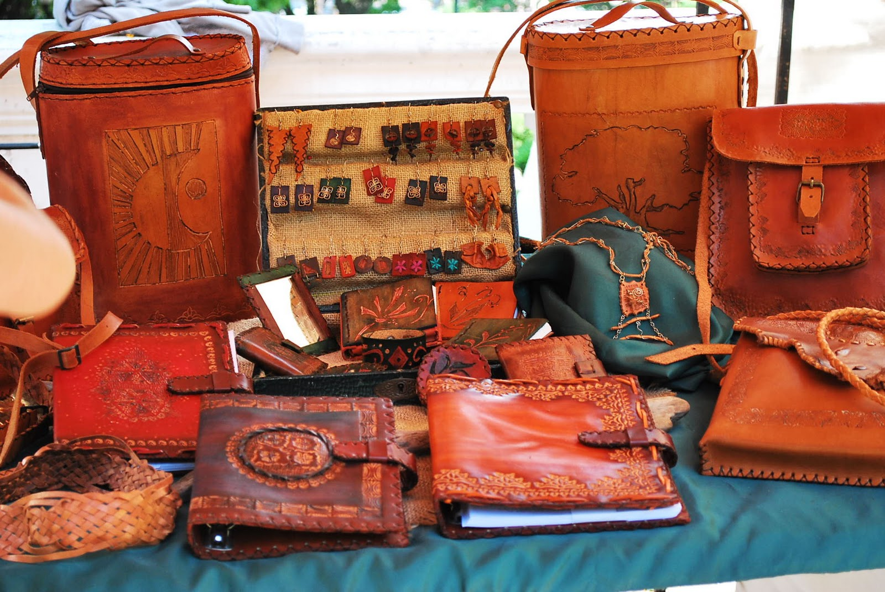

Museos y patrimonio
El Museo Quirós y otros espacios culturales resguardan la memoria histórica y artística de la ciudad.

Tradiciones, historia y expresiones artísticas que reflejan la identidad entrerriana
Gualeguay conserva una rica herencia cultural que se manifiesta en sus fiestas populares, sus museos, la música entrerriana y las costumbres transmitidas de generación en generación.
En cada rincón de Gualeguay se respira una cultura que combina tradición y modernidad, y que constituye la verdadera identidad de la ciudad.

El Museo Quirós y otros espacios culturales resguardan la memoria histórica y artística de la ciudad.
El chamamé y las coplas mantienen viva la esencia de la región, con festivales y encuentros locales.

Las artesanías en cuero, madera y tejidos representan la conexión entre la comunidad y su entorno.
